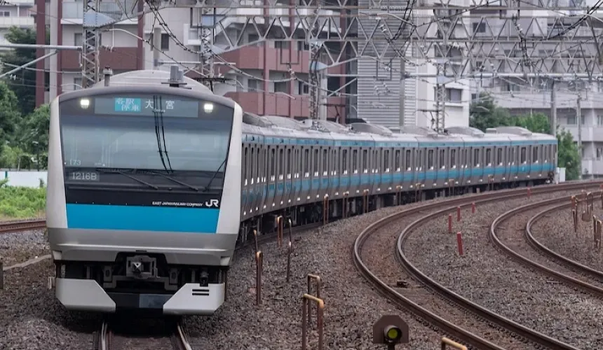
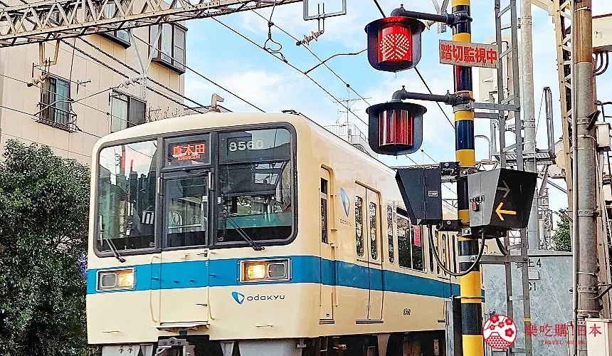
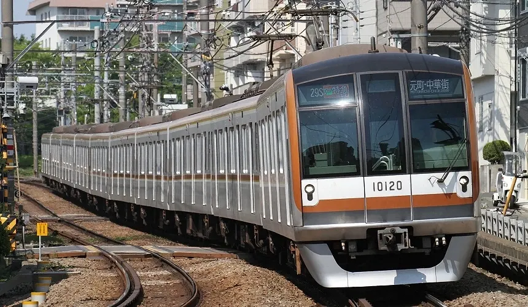
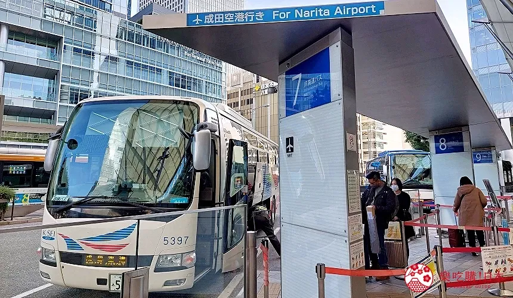

行前出發準備
七、交通方式
➢ JR (官網連結)
在日本你一定會見到「JR」這個LOGO，即日本鐵路公司。會依地區再分成「JR 東日本」「JR 西日本」「JR 九州」等。JR 包含「新幹線」和「在來線」。最快速、高價的是新幹線，類似台灣的高鐵，多為長途旅行時會用到。「在來線」指的是新幹線以外的路線，會依停靠站數多寡分成特急、快速、普通車，就像台灣台鐵有自強號和區間車的分別一樣。如東京都內的山手線、京濱東北線等，或是關西的奈良線、京都線、大阪環狀線等，都是屬於「在來線」範圍。

➢ 私鐵 介紹連結
「私鐵（私營鐵路）」也是連接城市與周邊地區交通的重要一環。簡單來說，除去 JR 、都營、市營地下鐵等官方經營的鐵道外，剩下的鐵路系統皆統稱私鐵，也就是私人企業經營的鐵路公司。像是旅人也經常利用的京王線、小田急線、西武、東武、阪急電鐵、名古屋電鐵都屬私鐵的範疇。雖然經營者不同，但搭乘方式跟 JR 並無太大差別，直接刷交通 IC 卡或至售票機買票即可進站。

➢ 地下鐵 (官網連結)
地下鐵網路又比鐵道更加密集了。日本幾乎各大城市裡都會獨立系統的地鐵，像是札幌市營地下鐵、京都市營地下鐵等，東京都內甚至還有多個地鐵系統。如果安排的景點都在單一城市裡，就會很常搭到地鐵！而以上所介紹到的「新幹線」「一般鐵路火車」「地鐵」這些，在日本都統稱為「電車」。

➢ 公車 (官網連結)
其實光是「鐵道」和「地下鐵」幾乎就能搞定所有景點間的交通，公車算是比較少用到的，唯少部分地區真的不能不搭公車，例如京都。京都市區的公車網路十分發達方便，且購買「京都地下鐵＋巴士一日券」就能當日無限搭乘，是很多自由行旅客會選擇的方式。
